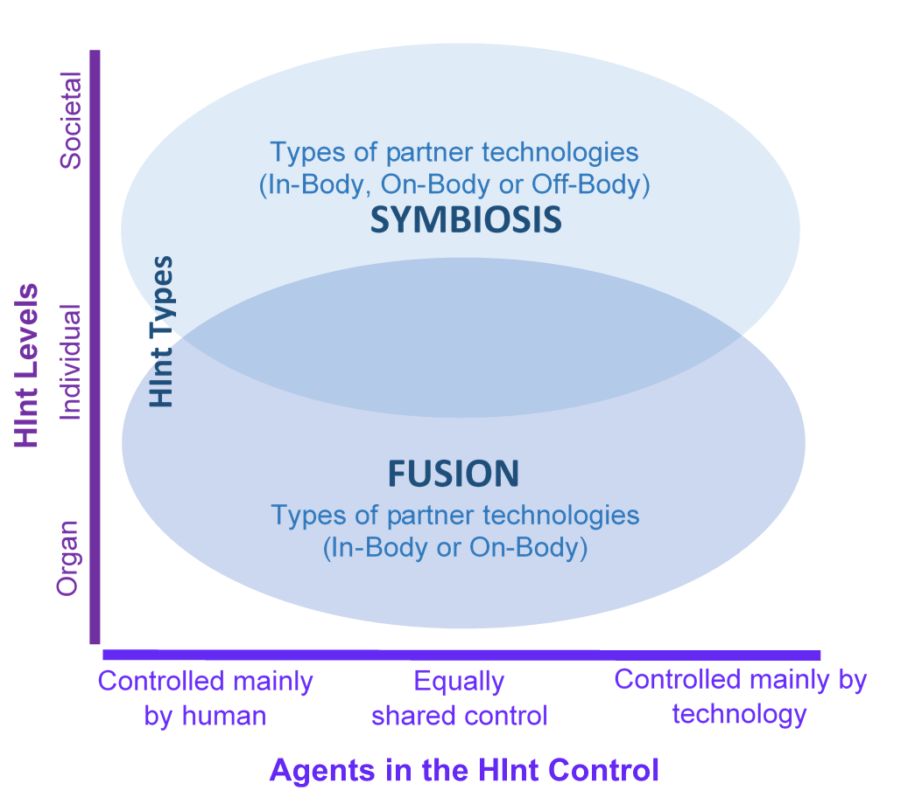

to
Jan, 2021
IEEE Xplore Digital Library
SpringerLink
Science Direct
Google Scholar
Milestones that contributed to the proposal of HInt paradigm
Event:
The "Integration" term was used to describe a possible (i.e., future) symbiotic relationship between humans and technologies (Licklider, 1960).See reference
Event:
The "Integration" term was used to characterize a new era between humans and technologies, the Human-Computer Integration (HInt) era (Farooq and Grudin, 2016).See reference
Event:
Researchers started the discussions to define Human-Computer Integration (HInt) not only as a new era, but as a possible paradigm shift from Human-Computer Interaction (HCI) to HInt (Farooq and Grudin, 2017).See reference
Event:
Human-Computer Integration (HInt) was discussed as an emerging paradigm that extends but does not replace the Human-Computer Interaction (HCI) area (Mueller el al, 2019).See reference
Event:
Human-Computer Integration (HInt) was formally defined and characterized as an emerging paradigm in the Human-Computer Interaction (HCI) area (Mueller el al, 2020).See reference
Human-Computer Integration (HInt) is an emerging paradigm in the Human-Computer Interaction (HCI) area that characterizes the relationship between humans and technologies as integration, in addition to interaction. In the HInt, users and technologies become codependent partners, that have some autonomy level to cooperate and collaborate with each other to reach common goals. The HInt can be characterized in terms of: (1) Agents in the HInt Control (i.e., Controlled mainly by humans; Equally shared control or Controlled mainly by technology); (2) HInt Levels (i.e., Societal, Individual or Organ); (3) HInt Types (Fusion or Symbiosis) and (4) Types of technologies that promote HInt (i.e., In-Body, On-Body and Off-Body). There is a continuum from interaction to integration. The integration extends but does not replace the interaction between humans and technologies.
Overview of HInt paradigm
Adapted from Muller et al., (2020)
Areas and domains which partner technologies can be used
Vis02 - Overview of HInt paradigm
Vis03 - Worldcloud
Vis04 - Conference events
Vis05 - Countries, institutions and authors who are addressing the Human-Computer Interaction (HInt)
Vis06 - Authors' relationship network
Vis07 - Distribution of initiatives that address Human-Computer Interaction
Vis08 - Publication focus per contribution type
Vis09 - Challenge types of HInt presented by the analyzed publications
Vis10 - Publication reference list